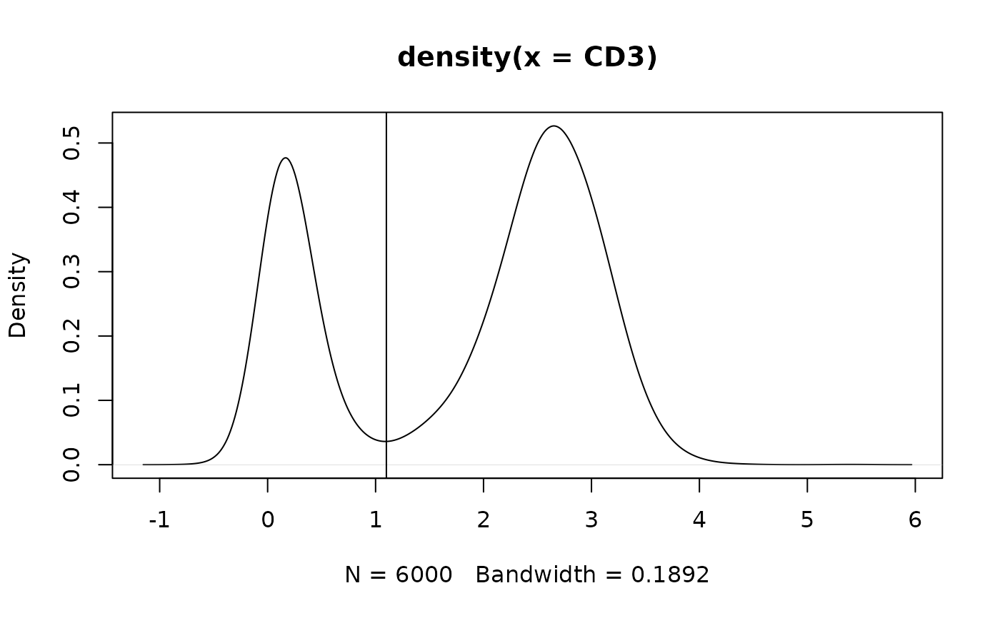

Subset flowstate[['data']] and return a new flowstate object.
Usage
# S3 method for class 'flowstate'
subset(x, ...)Arguments
- x
A flowstate object as returned from read.flowstate.
- ...
subsetargument as defined bydata.table's subset; logical expression indicating elements or rows to keep.
Value
A flowstate object whose [['data']] element (a data.table) has been subset to contain the rows as defined through the subset argument. Other elements of x are copied.
Examples
fcs.file.paths <- system.file("extdata", package = "flowstate") |>
list.files(full.names = TRUE, pattern = "BLOCK.*.fcs")
#read all .fcs files as flowstate objects; concatenate into a single object
fs <- read.flowstate(
fcs.file.paths,
colnames.type="S",
concatenate = TRUE
)
#> COVAIL_002_CYTOKINE_BLOCK1_1.fcs --> flowstate
#> COVAIL_002_CYTOKINE_BLOCK1_2.fcs --> flowstate
#> COVAIL_002_CYTOKINE_BLOCK1_3.fcs --> flowstate
#> Concatenating 'flowstate.ojects'...
#transform
flowstate.transform(fs,'CD3')
#> flowstate.object --> transforming...
#plot;visualize valley
fs$data[,plot(density(CD3))]
#> NULL
abline(v = 1.1)#not data-driven; just for example

#subset
fs.cd3_positive <- subset(fs,CD3 > 1.1)
#totals
fs$data[,.N]
#> [1] 6000
fs.cd3_positive$data[,.N]
#> [1] 4032